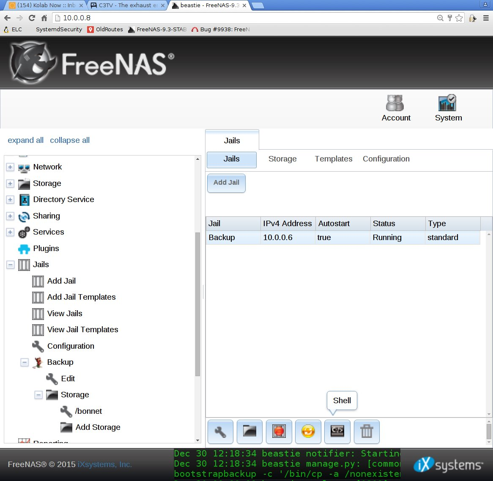
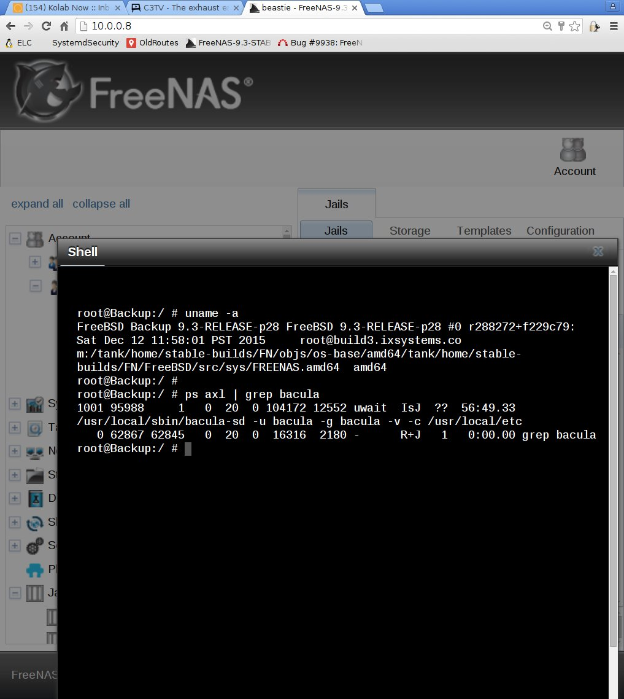
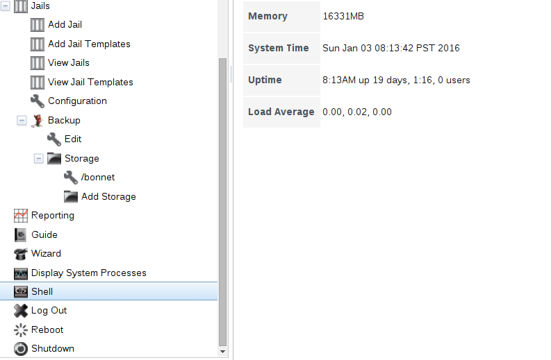

Prepared by Alison Chaiken in December, 2015, and offered under
in December, 2015, and offered under 
Prepared by Alison Chaiken in December, 2015, and offered under
in December, 2015, and offered under 


Goal: robust, secure backup of both desktop and laptop computers at home
iX Systems FreeNAS Mini with four WDC WD20EFRX discs arranged in a four-disk RAID-Z ZFS pools. Half of the space is for backup, and half is for a future ownCloud installation. Disapointingly, the system arrived improperly cabled, but once that minor problem was fixed, I've found it to be a truly nice piece of equipment. Thanks to marbus90 and webdestroya for help in figuring this out. The Mini has a lot of storage in a small space, runs cool, and is reasonably quiet.
Why FreeNAS Mini?
Why Bacula?
Why Debian?
What about cloud storage?
I also have my bits backed up at Strongspace.com, which:

Architecture of a Bacula installation labelled with the names of my machines. The machine names match those in the example configuration files linked below.
On the FreeNAS box that has ip address 10.0.0.8, the bacula-sd Storage Daemon is running inside a FreeBSD jail. The jail has a user bacula and its own ip address, 10.0.0.6. The FreeNAS box itself has a user bootstrapbackup who receives copies of the Bacula bootstrap files via a 'RunScript' that may be found in the bacula-dir.conf file. A FreeNAS shell is available via SSH from the desktop.

The image above shows that the 'Backup' FreeBSD jail that is hosted by the FreeNAS has associated storage in a directory called '/bonnet' in its container-level file hierarchy. The 'Shell' tooltip highlighted at the bottom of the screen shows where the button to access the jail's console is located, but it is only accessible when the jail number is highlighted (light blue in the figure).

The image above shows the '/bonnet' storage that is accessible to the 'Backup' jail looks from the FreeNAS side like the '/mnt/minivol/BonnetBackup' dataset that is part of the '/mnt/minivol' ZFS pool. Note the 'bootstrapbackup' FreeNAS user whose home directory receives Bacula 'bootstrap' files that are scp'ed over from the desktop by the Bacula Director via a 'RunScript' defined in bacula-dir.conf. Note that FreeNAS doesn't know about the 'bacula' user, who has an account in the 'Backup' FreeBSD jail, not in the FreeNAS system.

One of the cool features of FreeNAS is the ability to attach to the console of jails from the web interface. The output shows that the Bacula Storage Daemon process is running as user bacula by reading the /usr/local/etc/bacula/bacula-sd.conf configuration file. The bacula user account was created by via the 'adduser' command typed at this shell.
As Jens Heinrich helpfully pointed out via email, it's also possible to access the by ssh'ing to the FreeNAS host, running 'jls' to list the jails, and 'jexec <jail-number> /bin/sh'. 'jexec' is clearly FreeBSD's equivalent to Linux's 'chroot'.

Detail of the left-hand FreeNAS web configurator menu showing a highlighted icon will allows access to the FreeNAS shell, not the jails' shells. The shell available from the left menu duplicates the one available by SSH into the box. There's little reason to use this shell, which is easily confused with the jails'.
I ended up compiling Bacula from source on both FreeBSD and Debian because that was the simplest way to install compatible recent versions. The Bacula project does *not* employ semantic versioning, and in fact versions 7.0.x and 7.2.x are not compatible. Therefore the Storage Daemon on the NAS and the other Daemons on the desktop and laptop are all version 7.2.1 from bacula git.
How to tell if bacula-sd and bacula-dir are incompatible versions:
The Storage Daemon and Director must be the same
version. If the Director is compiled from a more recent
release, it will successfully contact
the SD via the bconsole application, but the handshaking around volume creation
will fail. A 'label' command will get an encouraging response from the
SD:
3000 OK label. VolBytes=193 VolABytes=0 VolType=1 Volume="Volume0" Device="BonnetFileStorage3" (/bonnet)
but the Director will report
Label command failed for Volume Volume0. Do not forget to mount the drive!!!
The reason is that the string returned by the SD is not in the format that the Director expects.
How to Compile and Install the Bacula Storage Daemon on FreeNAS:
First I installed the FreeBSD
Ports tree inside my FreeBSD jail using the jail's console
that is available via the FreeNAS web interface. Then I
compiled and installed the bacula-server port that I
obtained from freebsd.org.
Thanks to m0nkey at #freenas on Freenode IRC for suggesting
this approach!
I used standard CLI tools to create a bacula user and group
*inside the jail* and set bacula user as owner of the
directory that constitutes the Bacula Storage Daemon's Pool.
Inside the jail, the Bacula Storage
Daemon's config file is kept at
/usr/local/etc/bacula/bacula-sd.conf
bacula-sd is restarted when the jail is restarted when the
jail is restarted because I added the following lines to rc.conf.local file that is
within the jail:
bacula_sd_enable="YES" bacula_sd_flags=" -u bacula -g bacula -v -c /usr/local/etc/bacula/bacula-sd.conf"
Compiling on Debian:
git clone http://git.bacula.org/bacula git checkout -b Branch-7.2 origin/Branch-7.2 cd bacula/bacula ./config-me make; sudo make install
Also attached is a shell script that set ups inclusion of Bacula status summaries in the desktop Director-hosting system's syslog for Debian. The upstream version that comes from Bacula's git repo only works for RedHat-like distributions. Use the script from the bacula/bacula directory.
On Jessie, using systemd, set the bacula-dir and bacula-fd daemons to start at boot via
systemctl enable bacula-fd systemctl enable bacula-dir systemctl start bacula-fd systemctl start bacula-dir
Configuring the Bacula Director and File Daemon
Much of the Bacula documentation expects that the backups will go to
tape, and figuring out how to tune the configuration for disk backup
can be puzzling. Happily there's some guide
especially for disk backups.
Attached are the finale configuration files I ended up with for the Bacula Director, File Daemon on desktop, File Daemon on laptop, Console and bat. The point that confused me the most was the presence of the 'Pool' and 'FileSet' properties in the 'Restore' job of the autogenerated bacula-dir.conf files. These properties have no effect, and should be ignored. Note that there are two File Daemon configuration files, one for each 'Client' and only one file of the other types, corresponding to just one daemon instance. Immense thanks to optiz0r, dvl and mntbkr for all their advice about the setup.
I've obfuscated the passwords in these files, but the figure below from bacula.org FAQ explains completely how to set them up:

How to set up Bacula's multiple passwords from bacula.org FAQ
The Bacula 'bat' GUI dashboard displaying the Volumes in the two Pools that are set-up in bacula-dir.conf. The bat GUI is featureful and easy to use, but suffers from the shortcoming that it must be run as root: not with 'sudo', but with root login. The reason is that bat must be able to read the .conf files that are stored in the Bacula installation directory whose default permissions are 700.
One of the most compelling features of Bacula is that it efficiently stores data in logical volumes, including packing multiple backups into a single volume, and yet it allows fast retrieval of individual files. The desired file may be specified by name, in which case the 'restore' command will display all paths from all the matching backups that contain a matching filename. Should a file with the same complete path appear in multiple volumes, then the interface offers all the versions, implementing, in effect, a poor-man's version of version-control.
The bconsole CLI processing a 'restore' command for a file named cscope.out. All paths from all volumes with matching filenames are offered.
Restoring gigabytes of files from a failed or failing disk requires a bit more thought. For example, restoring a partition that's no longer present to its original pathname would require changes to /etc/fstab to mount that partition on a different UUID, which is inconvenient when the system is borked. Instead, restore to a different partition name on a new disk, then rename that partition if everything looks okay. The figure shows how I restored the files in /home/alison to /home2/alison on the new disk. Bacula automagically located all the volumes which held the newest versions of files in that directory.
'strip_prefix' and 'add_prefix' allow an Admin to cleanly restore files to a new disk.
The files to be restored must now be selected from the list of candidates that the previous step created using the 'markdir' and 'mark' commands.
'mark' and 'mark_dir' allow the Admin to select the files for restoration from the list. The field 'RegexWhere' illustrates the requested relocation of the restoration in the previous command.


alison@she-devel.com (Alison
Chaiken)
{kind=link}
{kind=link}
{kind=link}
{kind=link}